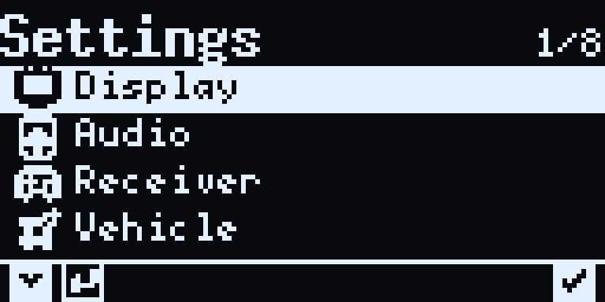
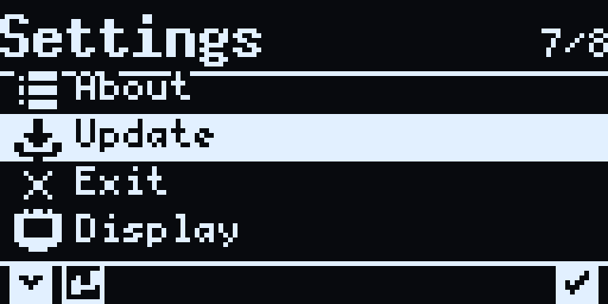
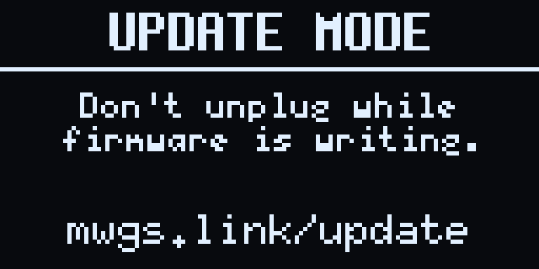

The latest MissionWeaver GCS firmware, and how to flash it.
Flashing
Updating takes about a minute and needs only the device and its USB-C
cable. The firmware ships as a .uf2 file: when the device is
in update mode it appears on your computer as a USB drive, and copying the
file onto it flashes and reboots the device automatically.

Step 1
From any monitor page, hold the Left button to open Settings.

Step 2
Click Left to move the cursor to Update, then click Right to select it.

Step 3
Hold the Right button to confirm. The device reboots into update mode and mounts on your computer as a USB drive.
Step 4
In your file explorer, drag the downloaded .uf2 onto the device's drive. It flashes, then reboots into the new firmware on its own.
History
Every published build. The newest is the recommended download above.